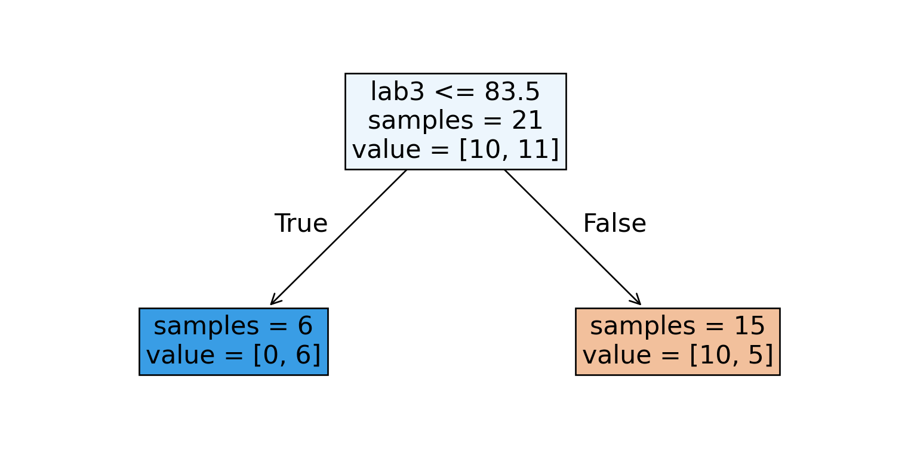
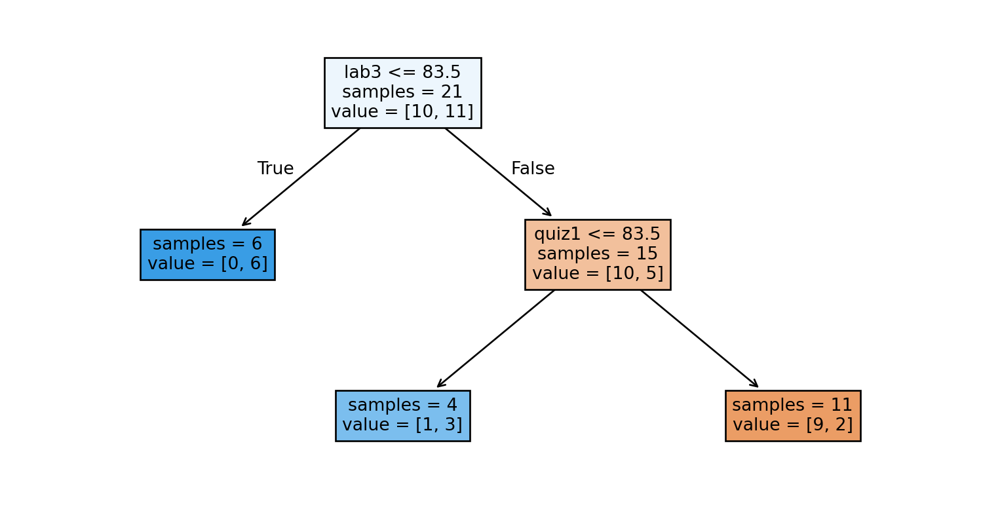
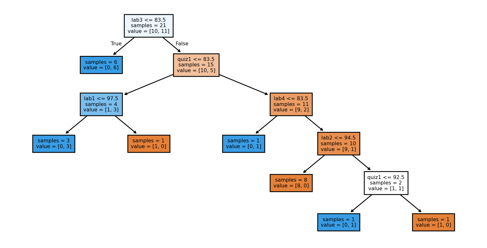
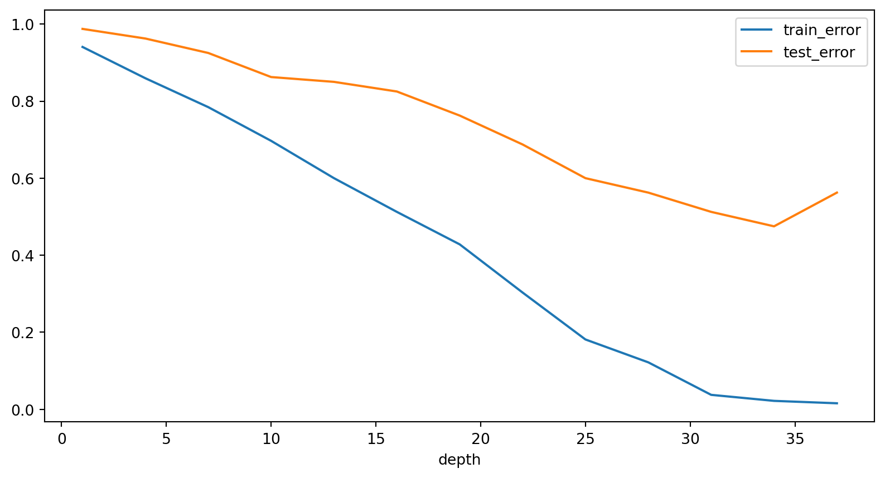

| ml_experience | class_attendance | lab1 | lab2 | lab3 | lab4 | quiz1 | quiz2 | |
|---|---|---|---|---|---|---|---|---|
| 0 | 1 | 1 | 92 | 93 | 84 | 91 | 92 | A+ |
| 1 | 1 | 0 | 94 | 90 | 80 | 83 | 91 | not A+ |
| 2 | 0 | 0 | 78 | 85 | 83 | 80 | 80 | not A+ |
| 3 | 0 | 1 | 91 | 94 | 92 | 91 | 89 | A+ |
| 4 | 0 | 1 | 77 | 83 | 90 | 92 | 85 | A+ |
Introduction to Machine Learning
Introduction to Machine Learning
Machine Learning uses computer programs to digest and accurately model data. After training on the data, a program can be used to extract hidden patterns, make predictions in new situations or generate novel content.
The program learns based on the features present in the data, which represent the information we have about each example.
Introduction to Machine Learning

Activity 1
Write one (or several) problems in your research field where you think Machine Learning could be applied. Try to address the following questions:
- What goal are you trying to accomplish? What would an ideal solution to your problem look like?
- How would a human solve this problem? What approaches are presently available and utilized?
- What kind of data is available to you, or might be collected? What features are present in the data?
One of the learning objectives of the workshop will be to determine whether your goal is best addressed using supervised machine learning, inferential statistics, unsupervised learning, deep learning, generative AI, or a non-ML solution.
Classification vs. Regression
Measuring Performance
Performance on classification tasks can be measured based on the accuracy of the model’s predictions.
Performance on a regression task can be measured based on error. Mean squared error is one choice, but there are many others!
Inference vs. Prediction
Inference is the use of a model to infer a relationship between features (independent variables) and targets (independent variables).
Prediction is the use of a model to predict the target value for a new example not seen in training.
What outcome do we care about?
A researcher studying the impact of pollution on cancer risk is performing inference. They may not make perfect predictions (since the dataset is likely to be noisy) but good statistical inference could be extremely valuable.
Gmail’s spam filtering algorithm is performing prediction. We are not really trying to improve human understanding of what makes a message spam (often it is obvious), we just want a model that makes good predictions.
Of course, these goals are related, so in many situations we may be interested in both.
Example: Linear Regression

Is this inference or prediction?
Types of Machine Learning
Today we will see two main types of machine learning, namely
Supervised Learning, and
Unsupervised Learning.
We will also discuss which problems each type might be best suited for.
Supervised Learning
Here the training data is comprised of a set of features, and each example comes with a corresponding target. The goal is to get a machine learning model to accurately predict the target based on the feature values.
Examples could include spam filtering, face recognition or weather forecasting.
Unsupervised Learning
In unsupervised learning, there are no targets. The goal is instead to uncover underlying patterns. These can be used to provide a concise summary of the data, or group similar examples together.
Examples could include customer segmentation, anomaly detection or online recommendation systems (think Netflix).
Other ML types
Some other types of Machine Learning include self-supervised learning and reinforcement learning.
Self-supervised algorithms automatically learn to generate labels and transform unsupervised problems to supervised ones.
Reinforcement Leaning trains an agent using a system of rewards and penalties. The agent learns strategies to maximize reward. AlphaGo is a reinforcement learning agent that taught itself to play Go, and was able to beat the strongest human Go players.
Activity 2
Return to the problems you identified in Activity 1. Try to decide if they involve performing inference or prediction.
Also suggest whether you think they are best approached with supervised or unsupervised learning. What aspects of the problem particularly suggest one approach over another?
A Simple Supervised Learning Model
We will use a simple machine learning model– a decision tree– to demonstrate some fundamental concepts in machine learning. Suppose we have the following dataset:
How would you go about predicting the Quiz 2 grade?
Decision Trees
A decision tree iteratively splits the data by asking questions about feature values.
The algorithm tries to ask questions that best separate one class from another. It’s like a game of twenty questions!
A Decision Stump

We could start by splitting the data based on the students’ Lab 3 grades.
Iterating the procedure

Then we further split each of the resulting nodes, again asking questions involving features in the dataset.
Building a Decision Tree

Decision Boundary
The first two questions in our tree involved Lab 3 and Quiz 1 grades. We can make a plot involving these two features to better understand our tree.

Model Parameters
During training, the model decides which feature to use to split at each node. It also decides which value of the feature to split at. This is the ‘learning’ phase, where the algorithm is trying different options and selecting the ‘best’ feature and value for splitting.
Hyperparameters
The maximum depth of a decision tree (at most how many questions it asks) is a hyper-parameter of the model. We can build different trees to test which choice of hyper-parameter gives the best result.
Some models may have a continuous range of options for a given hyper-parameter. This gives rise to a potentially infinite choice of “models” to test.
Trying to Recognize Faces
To demonstrate some fundamental concepts in machine learning, we will attempt to biuld a decision tree that can recognize faces. Our data will be taken from the Olivetti Faces dataset, which is a collection of 400 images of faces.
The labels correspond to the forty individuals that are pictured, and the dataset contains 10 photos per individual. We will try to use a decision tree to correctly predict the individual for each photo.
A Look at the Data
Each photo is 64x64 pixels in grayscale. The images are represented by a row of pixel intensities showing how dark each individual pixel should be.
| 0 | 1 | 2 | 3 | ... | 4092 | 4093 | 4094 | 4095 | |
|---|---|---|---|---|---|---|---|---|---|
| 0 | 0.309917 | 0.367769 | 0.417355 | 0.442149 | ... | 0.148760 | 0.152893 | 0.161157 | 0.157025 |
| 1 | 0.454545 | 0.471074 | 0.512397 | 0.557851 | ... | 0.152893 | 0.152893 | 0.152893 | 0.152893 |
| 2 | 0.318182 | 0.400826 | 0.491736 | 0.528926 | ... | 0.144628 | 0.140496 | 0.148760 | 0.152893 |
| ... | ... | ... | ... | ... | ... | ... | ... | ... | ... |
| 397 | 0.500000 | 0.533058 | 0.607438 | 0.628099 | ... | 0.157025 | 0.177686 | 0.148760 | 0.190083 |
| 398 | 0.214876 | 0.219008 | 0.219008 | 0.223140 | ... | 0.545455 | 0.574380 | 0.590909 | 0.603306 |
| 399 | 0.516529 | 0.462810 | 0.280992 | 0.252066 | ... | 0.322314 | 0.359504 | 0.355372 | 0.384298 |
400 rows × 4096 columns
The dataset has 4096 features.A Decision Tree Classifier
We can build a decision tree classifier on the dataset of faces and see how it performs. For now we will train on a random subset of the data that contains 80% of the images (we’ll explain why later)
Let’s see how accurate this model gets after training.
A Decision Tree Classifier
The model classified 100.0% of training examples correctly by
building a decision tree of depth 41
That’s very accurate indeed! Maybe decision trees are a really good way to detect and classify faces.
Remember, we only trained on 80% of the data. Let’s see how our model performs on the remaining 20%
Did we build a good model?
The model acheived an accuracy of 50.0% on new data
…oops.
What’s going on?

Practice makes perfect
Our deep decision tree likely just memorized the dataset. After all, with a tree of depth 38, we could actually memorize up to 238 distinct examples!
Clearly this does not make for a good model. After all, we want a model that can recognize faces, even when they appear in new images.
Overfitting
Overfitting refers to a situation where the model learns noise from the training data, leading to a poor performance when deployed on new data.
Complex models are prone to overfitting– we cannot just rely on training error to measure their performance. Simple models typically have similar train and test errors, but both will be high.
Thus we have our “fundamental tradeoff”: as we increase model complexity, the training error will reduce but the gap between training and test error will increase.

Scenario 1
Your colleague is trying to build a machine learning model to detect cancers in medical imaging. They know about overfitting, so they separate their data into a training set and a test set.
They use 10 different types of machine learning models, and try 1000 different combinations of hyper-parameters for each. In every case, they only use the training set to train their model, and then note how the model performs by measure accuracy on the test set.
The best model achieves 99% accuracy on the test set. Your colleague tells you they have found a machine learning model that diagnoses cancer with 99% accuracy.
Do you believe them?
The Golden Rule of Machine Learning
By using the same test set for each of the 10,000 models they tried, your colleague has violated the golden rule of machine learning.
The golden rule tells us that test data must not influence the model training in any way.
Even though your colleague never directly trained on test data, they used test data multiple times to validate model performance. As a result, they are likely to have found good performance purely by accident.
Scenario 2
Your colleague now separates their data into a training set, a validation set and a test set.
They again use 10 types of models and try 1000 combinations of hyper-parameters for each. They use the training set to train their model, and then note how the model performs by measure accuracy on the validation set.
The best model achieves 99% accuracy on the validation set, after which it is used on the test set. It achieves 99% accuracy again.
Do you trust the outcome now?